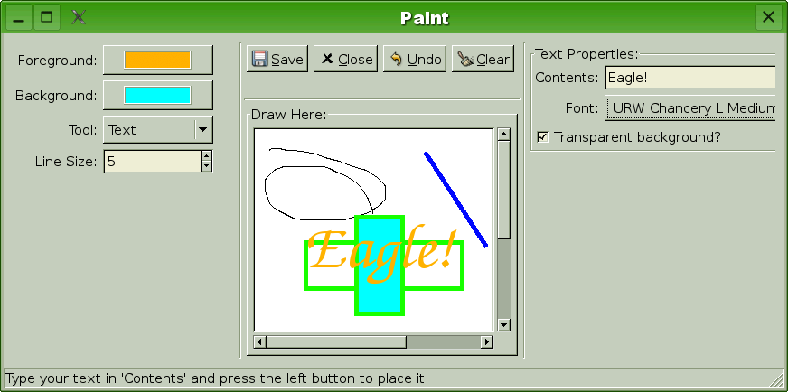

This tutorial will show how to create a simple "paintbrush"-like Eagle application. It will draw free-hand, lines, rectangles and text and even support undo!

Screen shot of final version.
Tips to follow this tutorial:
this.this."this".# this.Index:
This tutorial will show how to create a simple "paintbrush"-like Eagle application. It will draw free-hand, lines, rectangles and text and even support undo!
Screen shot of final version.
Let's first create the Graphical User Interface, it will be non-functional, but will already look like the final version! The code is in 01-gui.py.
#!/usr/bin/env python2 from eagle import * app = App( title="Paint", id="paint", statusbar=True, left=( Color( id="fg", label="Foreground:", color="black", ), Color( id="bg", label="Background:", color=( 255, 0, 0 ), ), Selection( id="tool", label="Tool:", ), UIntSpin( id="size", label="Line Size:", min=1, value=1, ), ), right=( Group( id="textgroup", label="Text Properties:", children=( Entry( id="text", label="Contents:", ), Font( id="font", label="Font:", ), CheckBox( id="textbgtransp", label="Transparent background?", ), ), ), Group( id="rectgroup", label="Rectangle Properties:", children=( CheckBox( id="rectfill", label="Fill?", ), ), ), ), top=( SaveFileButton(), CloseButton(), Button( id="undo", stock="undo", ), Button( id="clear", stock="clear", ), ), center=( Canvas( id="canvas", label="Draw Here:", width=400, height=400, bgcolor="white", ), ) ) run()
First version, with non-functional GUI.
First we import symbols from Ealge, then we start to declare
our App, first we give it a title, an id
(optional) and enable its statusbar. Then we define the left, right, top and center,
those we will explain individually.
This application will feature the main drawing menu at the left side. It will enable user to select background and foreground colors, what tool to use and also the size, that is used by most tools (except "Text"). So there we declare:
Color(
id="fg",
... )
app[ "fg" ]
Color(
id="bg",
... )
Selection(
id="tool",
... )
UIntSpin(
id="size",
... )
Tools that have more specific requirements will have these listed in the right area. Right now we will list every possible option inside its "tool" group, they will be "Text" and "Rectangle" groups. Running this example you will see both visible, but we will change this later to just show the group of the selected tool.
Group(
id="textgroup",
... )
Group(
id="rectgroup",
... )
Entry(
id="text",
... )
Font(
id="font",
... )
CheckBox(
id="textbgtransp",
... )
CheckBox(
id="rectfill",
... )
Top area will hold some application functionality, like saving the drawing to a file, quit the application, clear the canvas and even the undo feature.
SaveFileButton()CloseButton()
Button(
id="undo",
... )
Button(
id="clear",
... )
The center area will hold the canvas, that is, the place where we draw.
Canvas(
id="canvas",
... )
Now lets start to make it functional by adding the line drawing tool. Together with it we will create an extensible architecture to add more tools later. The code is in 02-line.py. The differences between the previous version and the current is given at 01-02.diff.
#!/usr/bin/env python2 from eagle import * class Tool( object ): """Interface to be implemented by tools.""" def mouse( self, app, canvas, buttons, x, y ): """This tool have a user feedback using mouse on canvas.""" pass # mouse() # Tool class Line( Tool ): def __init__( self ): self.first_point = None # __init__() def mouse( self, app, canvas, buttons, x, y ): if buttons & Canvas.MOUSE_BUTTON_1: if self.first_point is None: self.first_point = ( x, y ) else: color = app[ "fg" ] size = app[ "size" ] x0, y0 = self.first_point canvas.draw_line( x0, y0, x, y, color, size ) self.first_point = None # mouse() # Line tools = { "Line": Line(), } def_tool="Line" def canvas_action( app, canvas, buttons, x, y ): tool = app[ "tool" ] tools[ tool ].mouse( app, canvas, buttons, x, y ) # canvas_action() app = App( title="Paint", id="paint", statusbar=True, left=( Color( id="fg", label="Foreground:", color="black", ), Color( id="bg", label="Background:", color=( 255, 0, 0 ), ), Selection( id="tool", label="Tool:", options=tools.keys(), active=def_tool, ), UIntSpin( id="size", label="Line Size:", min=1, value=1, ), ), right=( Group( id="textgroup", label="Text Properties:", children=( Entry( id="text", label="Contents:", ), Font( id="font", label="Font:", ), CheckBox( id="textbgtransp", label="Transparent background?", ), ), ), Group( id="rectgroup", label="Rectangle Properties:", children=( CheckBox( id="rectfill", label="Fill?", ), ), ), ), top=( SaveFileButton(), CloseButton(), Button( id="undo", stock="undo", ), Button( id="clear", stock="clear", ), ), center=( Canvas( id="canvas", label="Draw Here:", width=400, height=400, bgcolor="white", callback=canvas_action, ), ) ) run()
Newer version, with changes highlighted. Now we have the line tool.
Let's start by creating an interface to guide our tool
behaviour, this is done with Tool
and its method mouse(
self, app,
canvas, buttons, x, y )Canvas callback canvas_action.
Then we implement this interface for the line drawing tool. To draw a line we need two points, since we're called just when user click or move the mouse, we need to remember the last point and just draw when we have the second point.
Now we make it usable by the application, we will use a dict
to map tools and their names and then change the tools
component to make it use this information. Note that we alter the App declaration, more specifically the Selection declaration to make use of the options.
And to finish this step, create a canvas callback canvas_action and alter App definition to make use of it in the Canvas definition.
Following the ideas in the last section we add the remaining
tools Pencil, Rectangle and Text drawing. This should be no problem if
you understood the previous section.
The code is in 03-tools.py. The differences between
the previous version and the current is given at 02-03.diff.
#!/usr/bin/env python2 from eagle import * class Tool( object ): """Interface to be implemented by tools.""" def mouse( self, app, canvas, buttons, x, y ): """This tool have a user feedback using mouse on canvas.""" pass # mouse() # Tool class Line( Tool ): def __init__( self ): self.first_point = None # __init__() def mouse( self, app, canvas, buttons, x, y ): if buttons & Canvas.MOUSE_BUTTON_1: if self.first_point is None: self.first_point = ( x, y ) else: color = app[ "fg" ] size = app[ "size" ] x0, y0 = self.first_point canvas.draw_line( x0, y0, x, y, color, size ) self.first_point = None # mouse() # Line class Pencil( Tool ): def __init__( self ): self.last_point = None # __init__() def mouse( self, app, canvas, buttons, x, y ): if buttons & Canvas.MOUSE_BUTTON_1: color = app[ "fg" ] size = app[ "size" ] if self.last_point is not None: x0, y0 = self.last_point else: x0 = x + 1 y0 = y if size == 1: canvas.draw_point( x, y, color ) else: half = size / 2 canvas.draw_rectangle( x-half, y-half, size, size, color, 1, color, True ) canvas.draw_line( x0, y0, x, y, color, size ) self.last_point = ( x, y ) else: # Button 1 was released, reset last point self.last_point = None # mouse() # Pencil class Rectangle( Tool ): def __init__( self ): self.first_point = None # __init__() def mouse( self, app, canvas, buttons, x, y ): if buttons & Canvas.MOUSE_BUTTON_1: if self.first_point is None: self.first_point = ( x, y ) else: fg = app[ "fg" ] bg = app[ "bg" ] size = app[ "size" ] fill = app[ "rectfill" ] x0, y0 = self.first_point if x0 > x: x0, x = x, x0 if y0 > y: y0, y = y, y0 w = x - x0 h = y - y0 canvas.draw_rectangle( x0, y0, w, h, fg, size, bg, fill ) self.first_point = None # mouse() # Rectangle class Text( Tool ): def mouse( self, app, canvas, buttons, x, y ): if buttons & Canvas.MOUSE_BUTTON_1 and app[ "text" ]: text = app[ "text" ] fg = app[ "fg" ] bg = app[ "bg" ] font = app[ "font" ] if app[ "textbgtransp" ]: bg = None canvas.draw_text( text, x, y, fg, bg, font ) # mouse() # Text tools = { "Line": Line(), "Pencil": Pencil(), "Rectangle": Rectangle(), "Text": Text(), } def_tool="Line" def canvas_action( app, canvas, buttons, x, y ): tool = app[ "tool" ] tools[ tool ].mouse( app, canvas, buttons, x, y ) # canvas_action() app = App( title="Paint", id="paint", statusbar=True, left=( Color( id="fg", label="Foreground:", color="black", ), Color( id="bg", label="Background:", color=( 255, 0, 0 ), ), Selection( id="tool", label="Tool:", options=tools.keys(), active=def_tool, ), UIntSpin( id="size", label="Line Size:", min=1, value=1, ), ), right=( Group( id="textgroup", label="Text Properties:", children=( Entry( id="text", label="Contents:", ), Font( id="font", label="Font:", ), CheckBox( id="textbgtransp", label="Transparent background?", ), ), ), Group( id="rectgroup", label="Rectangle Properties:", children=( CheckBox( id="rectfill", label="Fill?", ), ), ), ), top=( SaveFileButton(), CloseButton(), Button( id="undo", stock="undo", ), Button( id="clear", stock="clear", ), ), center=( Canvas( id="canvas", label="Draw Here:", width=400, height=400, bgcolor="white", callback=canvas_action, ), ) ) run()
Third version, with changes highlighted. Every tool is in place.
You may find Pencil's mouse method a bit weird. Why not
just paint the point if the mouse button is pressed? Well,
here comes a limitation of the underlying system: it's almost
impossible to get all response from user, so you may have
skipped points and if just draw points, there may be holes in
the drawing. Then we remember the last point and draw a line
from it to the current point, avoiding holes. Also, since we
just draw when mouse button is clicked, we forget the last
point as soon as user releases the mouse button.
In this section we will implement Undo the trivial way: by remembering
entire images between drawing steps. This wastes memory, but
it's really easy to implement. It's done using a stack where
we push images before we draw. If user want to undo, we pop
the topmost image and paint the canvas with it.
The code is in 04-undo.py. The differences between
the previous version and the current is given at 03-04.diff.
#!/usr/bin/env python2 from eagle import * class Undo( object ): def __init__( self, app ): self.last_images = [] self.app = app app.undo = self self.canvas = app[ "canvas" ] self.button = app[ "undo" ] self.button.set_inactive() # __init__() def push( self ): img = self.canvas.get_image() self.last_images.append( img ) self.button.set_active() # push() def pop( self ): if self.last_images: img = self.last_images.pop() self.canvas.draw_image( img ) if not self.last_images: self.button.set_inactive() # pop() # Undo class Tool( object ): """Interface to be implemented by tools.""" def mouse( self, app, canvas, buttons, x, y ): """This tool have a user feedback using mouse on canvas.""" pass # mouse() # Tool class Line( Tool ): def __init__( self ): self.first_point = None # __init__() def mouse( self, app, canvas, buttons, x, y ): if buttons & Canvas.MOUSE_BUTTON_1: if self.first_point is None: self.first_point = ( x, y ) else: color = app[ "fg" ] size = app[ "size" ] x0, y0 = self.first_point app.undo.push() canvas.draw_line( x0, y0, x, y, color, size ) self.first_point = None # mouse() # Line class Pencil( Tool ): def __init__( self ): self.last_point = None self.changed = False # __init__() def mouse( self, app, canvas, buttons, x, y ): if buttons & Canvas.MOUSE_BUTTON_1: if not self.changed: app.undo.push() self.changed = True color = app[ "fg" ] size = app[ "size" ] if self.last_point is not None: x0, y0 = self.last_point else: x0 = x + 1 y0 = y if size == 1: canvas.draw_point( x, y, color ) else: half = size / 2 canvas.draw_rectangle( x-half, y-half, size, size, color, 1, color, True ) canvas.draw_line( x0, y0, x, y, color, size ) self.last_point = ( x, y ) else: # Button 1 was released, reset last point self.last_point = None self.changed = False # mouse() # Pencil class Rectangle( Tool ): def __init__( self ): self.first_point = None # __init__() def mouse( self, app, canvas, buttons, x, y ): if buttons & Canvas.MOUSE_BUTTON_1: if self.first_point is None: self.first_point = ( x, y ) else: fg = app[ "fg" ] bg = app[ "bg" ] size = app[ "size" ] fill = app[ "rectfill" ] x0, y0 = self.first_point if x0 > x: x0, x = x, x0 if y0 > y: y0, y = y, y0 w = x - x0 h = y - y0 app.undo.push() canvas.draw_rectangle( x0, y0, w, h, fg, size, bg, fill ) self.first_point = None # mouse() # Rectangle class Text( Tool ): def mouse( self, app, canvas, buttons, x, y ): if buttons & Canvas.MOUSE_BUTTON_1 and app[ "text" ]: text = app[ "text" ] fg = app[ "fg" ] bg = app[ "bg" ] font = app[ "font" ] if app[ "textbgtransp" ]: bg = None app.undo.push() canvas.draw_text( text, x, y, fg, bg, font ) # mouse() # Text tools = { "Line": Line(), "Pencil": Pencil(), "Rectangle": Rectangle(), "Text": Text(), } def_tool="Line" def canvas_action( app, canvas, buttons, x, y ): tool = app[ "tool" ] tools[ tool ].mouse( app, canvas, buttons, x, y ) # canvas_action() def do_undo( app, button ): app.undo.pop() # do_undo() app = App( title="Paint", id="paint", statusbar=True, left=( Color( id="fg", label="Foreground:", color="black", ), Color( id="bg", label="Background:", color=( 255, 0, 0 ), ), Selection( id="tool", label="Tool:", options=tools.keys(), active=def_tool, ), UIntSpin( id="size", label="Line Size:", min=1, value=1, ), ), right=( Group( id="textgroup", label="Text Properties:", children=( Entry( id="text", label="Contents:", ), Font( id="font", label="Font:", ), CheckBox( id="textbgtransp", label="Transparent background?", ), ), ), Group( id="rectgroup", label="Rectangle Properties:", children=( CheckBox( id="rectfill", label="Fill?", ), ), ), ), top=( SaveFileButton(), CloseButton(), Button( id="undo", stock="undo", callback=do_undo, ), Button( id="clear", stock="clear", ), ), center=( Canvas( id="canvas", label="Draw Here:", width=400, height=400, bgcolor="white", callback=canvas_action, ), ) ) Undo( app ) run()
Fourth version, with changes highlighted. Now we can undo.
Pencil, again, is a bit different
from other tools. Why? Because we need to discover when it
changed a image, but the draw step is not the small line
between current and last point, but from the moment user
pressed the mouse and when it releases it. So we use the state
variable changed.
As you may note, we create the do_undo callback and associate it
with the Button( id="undo",
... )Undo class! We don't need to remember any
references to it, since it registers itself with the App and Tools
will use this member.
Now we already have a working paint program, we may add some extra functionality, like to clear (reset) the canvas to original state or even save the canvas to a file. Also, we will add a confirmation dialog before quit the application, avoiding mistakes. The code is in 05-extra.py. The differences between the previous version and the current is given at 04-05.diff.
#!/usr/bin/env python2 from eagle import * class Undo( object ): def __init__( self, app ): self.last_images = [] self.app = app app.undo = self self.canvas = app[ "canvas" ] self.button = app[ "undo" ] self.button.set_inactive() # __init__() def push( self ): img = self.canvas.get_image() self.last_images.append( img ) self.button.set_active() # push() def pop( self ): if self.last_images: img = self.last_images.pop() self.canvas.draw_image( img ) if not self.last_images: self.button.set_inactive() # pop() # Undo class Tool( object ): """Interface to be implemented by tools.""" def mouse( self, app, canvas, buttons, x, y ): """This tool have a user feedback using mouse on canvas.""" pass # mouse() # Tool class Line( Tool ): def __init__( self ): self.first_point = None # __init__() def mouse( self, app, canvas, buttons, x, y ): if buttons & Canvas.MOUSE_BUTTON_1: if self.first_point is None: self.first_point = ( x, y ) else: color = app[ "fg" ] size = app[ "size" ] x0, y0 = self.first_point app.undo.push() canvas.draw_line( x0, y0, x, y, color, size ) self.first_point = None # mouse() # Line class Pencil( Tool ): def __init__( self ): self.last_point = None self.changed = False # __init__() def mouse( self, app, canvas, buttons, x, y ): if buttons & Canvas.MOUSE_BUTTON_1: if not self.changed: app.undo.push() self.changed = True color = app[ "fg" ] size = app[ "size" ] if self.last_point is not None: x0, y0 = self.last_point else: x0 = x + 1 y0 = y if size == 1: canvas.draw_point( x, y, color ) else: half = size / 2 canvas.draw_rectangle( x-half, y-half, size, size, color, 1, color, True ) canvas.draw_line( x0, y0, x, y, color, size ) self.last_point = ( x, y ) else: # Button 1 was released, reset last point self.last_point = None self.changed = False # mouse() # Pencil class Rectangle( Tool ): def __init__( self ): self.first_point = None # __init__() def mouse( self, app, canvas, buttons, x, y ): if buttons & Canvas.MOUSE_BUTTON_1: if self.first_point is None: self.first_point = ( x, y ) else: fg = app[ "fg" ] bg = app[ "bg" ] size = app[ "size" ] fill = app[ "rectfill" ] x0, y0 = self.first_point if x0 > x: x0, x = x, x0 if y0 > y: y0, y = y, y0 w = x - x0 h = y - y0 app.undo.push() canvas.draw_rectangle( x0, y0, w, h, fg, size, bg, fill ) self.first_point = None # mouse() # Rectangle class Text( Tool ): def mouse( self, app, canvas, buttons, x, y ): if buttons & Canvas.MOUSE_BUTTON_1 and app[ "text" ]: text = app[ "text" ] fg = app[ "fg" ] bg = app[ "bg" ] font = app[ "font" ] if app[ "textbgtransp" ]: bg = None app.undo.push() canvas.draw_text( text, x, y, fg, bg, font ) # mouse() # Text tools = { "Line": Line(), "Pencil": Pencil(), "Rectangle": Rectangle(), "Text": Text(), } def_tool="Line" def canvas_action( app, canvas, buttons, x, y ): tool = app[ "tool" ] tools[ tool ].mouse( app, canvas, buttons, x, y ) # canvas_action() def save( app, button, filename ): canvas = app[ "canvas" ] img = canvas.get_image() try: img.save( filename ) except Exception, e: error( str( e ) ) # save() def clear( app, button ): app.undo.push() app[ "canvas" ].clear() # clear() def confirm_quit( app ): return yesno( "Are you sure you want to close '%s'?" % app.title ) # confirm_quit() def do_undo( app, button ): app.undo.pop() # do_undo() app = App( title="Paint", id="paint", statusbar=True, quit_callback=confirm_quit, left=( Color( id="fg", label="Foreground:", color="black", ), Color( id="bg", label="Background:", color=( 255, 0, 0 ), ), Selection( id="tool", label="Tool:", options=tools.keys(), active=def_tool, ), UIntSpin( id="size", label="Line Size:", min=1, value=1, ), ), right=( Group( id="textgroup", label="Text Properties:", children=( Entry( id="text", label="Contents:", ), Font( id="font", label="Font:", ), CheckBox( id="textbgtransp", label="Transparent background?", ), ), ), Group( id="rectgroup", label="Rectangle Properties:", children=( CheckBox( id="rectfill", label="Fill?", ), ), ), ), top=( SaveFileButton( callback=save ), CloseButton(), Button( id="undo", stock="undo", callback=do_undo, ), Button( id="clear", stock="clear", callback=clear, ), ), center=( Canvas( id="canvas", label="Draw Here:", width=400, height=400, bgcolor="white", callback=canvas_action, ), ) ) Undo( app ) run()
Fifth version, with changes highlighted. Now we can clear and save.
Changes are really simple, just 3 callbacks more. The First
callback, save, get the
Image from Canvas and save it to a file, being
carefully with exceptions raised by this process (mainly
invalid formats, given by wrong file extensions), if an
exception is raised, it uses the Eagle's error dialog box. Other callbacks
are even more straightforward, just note that clear also collaborates with
Undo and that confirm_quit uses Eagle's yesno question to return to code if it may exit or not.
The last section finished every feature we want in our
example application, but it's not that polished. Users have no
feedback on actions and may be confused "What do I need to do
now?", then we will use the status bar to show these kind of
information to them. Also, having Text and Rectangle
properties shown while drawing a Line is a bid odd! We fix
this with the introduction of set_active and set_inactive methods, that will
be called when tools turn active or inactive. There we will
show and remove messages from status bar, together with other
relevant places. We also use these methods to hide and show
groups from the right area.
The code is in 06-polishing.py. The differences between
the previous version and the current is given at 05-06.diff.
#!/usr/bin/env python2 from eagle import * class Undo( object ): def __init__( self, app ): self.last_images = [] self.app = app app.undo = self self.canvas = app[ "canvas" ] self.button = app[ "undo" ] self.button.set_inactive() # __init__() def push( self ): img = self.canvas.get_image() self.last_images.append( img ) self.button.set_active() # push() def pop( self ): if self.last_images: img = self.last_images.pop() self.canvas.draw_image( img ) if not self.last_images: self.button.set_inactive() # pop() # Undo class Tool( object ): """Interface to be implemented by tools.""" def set_active( self, app ): """This tool is now active.""" pass # set_active() def set_inactive( self, app ): """This tool is now inactive. """ pass # set_inactive() def mouse( self, app, canvas, buttons, x, y ): """This tool have a user feedback using mouse on canvas.""" pass # mouse() # Tool class Line( Tool ): def __init__( self ): self.first_point = None self.message_id = None # __init__() def set_active( self, app ): self.message_id = app.status_message( "Press the left mouse button to mark the first point." ) # set_active() def set_inactive( self, app ): if self.message_id is not None: app.remove_status_message( self.message_id ) # set_inactive() def mouse( self, app, canvas, buttons, x, y ): if buttons & Canvas.MOUSE_BUTTON_1: if self.first_point is None: self.first_point = ( x, y ) self.inner_message_id = app.status_message( ( "First poit at ( %d, %d ). Now mark the second." ) % ( x, y ) ) else: color = app[ "fg" ] size = app[ "size" ] x0, y0 = self.first_point app.undo.push() canvas.draw_line( x0, y0, x, y, color, size ) self.first_point = None app.remove_status_message( self.inner_message_id ) # mouse() # Line class Pencil( Tool ): def __init__( self ): self.last_point = None self.message_id = None self.changed = False # __init__() def set_active( self, app ): self.message_id = app.status_message( "Press the left mouse button and move your mouse." ) # set_active() def set_inactive( self, app ): if self.message_id is not None: app.remove_status_message( self.message_id ) # set_inactive() def mouse( self, app, canvas, buttons, x, y ): if buttons & Canvas.MOUSE_BUTTON_1: if not self.changed: app.undo.push() self.changed = True color = app[ "fg" ] size = app[ "size" ] if self.last_point is not None: x0, y0 = self.last_point else: x0 = x + 1 y0 = y if size == 1: canvas.draw_point( x, y, color ) else: half = size / 2 canvas.draw_rectangle( x-half, y-half, size, size, color, 1, color, True ) canvas.draw_line( x0, y0, x, y, color, size ) self.last_point = ( x, y ) else: # Button 1 was released, reset last point self.last_point = None self.changed = False # mouse() # Pencil class Rectangle( Tool ): def __init__( self ): self.first_point = None self.message_id = None # __init__() def set_active( self, app ): app[ "rectgroup" ].show() self.message_id = app.status_message( "Press the left mouse button to mark first point." ) # set_active() def set_inactive( self, app ): app[ "rectgroup" ].hide() if self.message_id is not None: app.remove_status_message( self.message_id ) # set_inactive() def mouse( self, app, canvas, buttons, x, y ): if buttons & Canvas.MOUSE_BUTTON_1: if self.first_point is None: self.first_point = ( x, y ) self.inner_message_id = app.status_message( ( "First poit at ( %d, %d ). Now mark the second." ) % ( x, y ) ) else: fg = app[ "fg" ] bg = app[ "bg" ] size = app[ "size" ] fill = app[ "rectfill" ] x0, y0 = self.first_point if x0 > x: x0, x = x, x0 if y0 > y: y0, y = y, y0 w = x - x0 h = y - y0 app.undo.push() canvas.draw_rectangle( x0, y0, w, h, fg, size, bg, fill ) self.first_point = None app.remove_status_message( self.inner_message_id ) # mouse() # Rectangle class Text( Tool ): def __init__( self ): self.message_id = None # __init__() def set_active( self, app ): app[ "textgroup" ].show() self.message_id = app.status_message( "Type your text in 'Contents' and press the left button " \ "to place it." ) # set_active() def set_inactive( self, app ): app[ "textgroup" ].hide() if self.message_id is not None: app.remove_status_message( self.message_id ) # set_inactive() def mouse( self, app, canvas, buttons, x, y ): if buttons & Canvas.MOUSE_BUTTON_1 and app[ "text" ]: text = app[ "text" ] fg = app[ "fg" ] bg = app[ "bg" ] font = app[ "font" ] if app[ "textbgtransp" ]: bg = None app.undo.push() canvas.draw_text( text, x, y, fg, bg, font ) # mouse() # Text tools = { "Line": Line(), "Pencil": Pencil(), "Rectangle": Rectangle(), "Text": Text(), } def_tool="Line" def tool_changed( app, tool, value ): if tool_changed.last_tool: tool_changed.last_tool.set_inactive( app ) t = tools[ value ] tool_changed.last_tool = t t.set_active( app ) # tool_changed() tool_changed.last_tool = None def canvas_action( app, canvas, buttons, x, y ): tool = app[ "tool" ] tools[ tool ].mouse( app, canvas, buttons, x, y ) # canvas_action() def save( app, button, filename ): canvas = app[ "canvas" ] img = canvas.get_image() try: img.save( filename ) except Exception, e: error( str( e ) ) # save() def clear( app, button ): app.undo.push() app[ "canvas" ].clear() # clear() def confirm_quit( app ): return yesno( "Are you sure you want to close '%s'?" % app.title ) # confirm_quit() def do_undo( app, button ): app.undo.pop() # do_undo() app = App( title="Paint", id="paint", statusbar=True, quit_callback=confirm_quit, left=( Color( id="fg", label="Foreground:", color="black", ), Color( id="bg", label="Background:", color=( 255, 0, 0 ), ), Selection( id="tool", label="Tool:", options=tools.keys(), active=def_tool, callback=tool_changed, ), UIntSpin( id="size", label="Line Size:", min=1, value=1, ), ), right=( Group( id="textgroup", label="Text Properties:", children=( Entry( id="text", label="Contents:", ), Font( id="font", label="Font:", ), CheckBox( id="textbgtransp", label="Transparent background?", ), ), ), Group( id="rectgroup", label="Rectangle Properties:", children=( CheckBox( id="rectfill", label="Fill?", ), ), ), ), top=( SaveFileButton( callback=save ), CloseButton(), Button( id="undo", stock="undo", callback=do_undo, ), Button( id="clear", stock="clear", callback=clear, ), ), center=( Canvas( id="canvas", label="Draw Here:", width=400, height=400, bgcolor="white", callback=canvas_action, ), ) ) for tool in tools.itervalues(): tool.set_inactive( app ) tool_changed( app, app.get_widget_by_id( "tool" ), def_tool ) Undo( app ) run()
Sixth version, with changes highlighted. Now we have messages in status bar and just relevant info in the right.
That's it folks! Now you should try to implement more tools and more options to the current tools.
This document was written by Gustavo Sverzut Barbieri and is licensed under Creative Commons - Attribution/Share Alike.
Grab most recent version at:
http://www.gustavobarbieri.com.br/eagle/docs/tutorials/paint/